Overview
🔍Project Context
MindFlex AI is an adaptive information system powered by generative AI models, which can provide personalized information and adjust their UI based on users' queries. Therefore, it is an intelligent system in which AI reads the emotional state of the human user and responds flexibly accordingly.
Jensen Huang, the CEO of NVIDIA, describes AI as the easiest tool in human history and one that can help realize equity. I agree with this to some extent. More precisely, I believe that while AI is not yet such a tool, it holds that potential. Users can interact with AI through a simple chat in their preferred language, which has contributed to the rapid popularity of models like ChatGPT and Gemini. However, despite the wide diversity in users' backgrounds and contexts, these general-purpose AI models provide the same environment to all users. As a result, the quality of AI responses can vary significantly depending on users' literacy and metacognitive abilities. To address this disparity, I propose an adaptive system that reflects users' context with the UI components.
This project was proposed in the course INST728F in 2025 Fall semester, led by Professor Tom Brinck at the University of Maryland, and the primary focus was to implement these ideas through UX/UI design.
❓Problem
Most AI systems have been optimized primarily for accuracy-related metrics such as F-measure. However, real human information-seeking behavior is far more influenced by the context in which the system is used and by psychological factors such as cognitive load and trust calibration.Misuse of general-purpose AI can lead to truly dangerous consequences. In August 2025, there was a case in which a student died by suicide after interacting with ChatGPT . This incident occurred, in part, because generative AIs like ChatGPT are generally designed to respond supportively to users regardless of the purpose of use. However, this issue cannot simply be dismissed as an individual's poor judgment. To design safer and more equitable information systems, we must confront and address these challenges directly.
Therefore, this project explores what kinds of design are needed to prevent misuse and build a safer information system.
🎯Design Goals and Final Designs
Design Goal 1️⃣: Support for various modes tailored to users needs
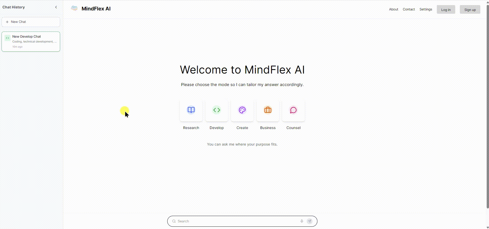
- Support for five distinct modes:
research, development, creation, business, and counseling - The settings page allows for more specific customization:
preferred sources, citation style, level of alerts
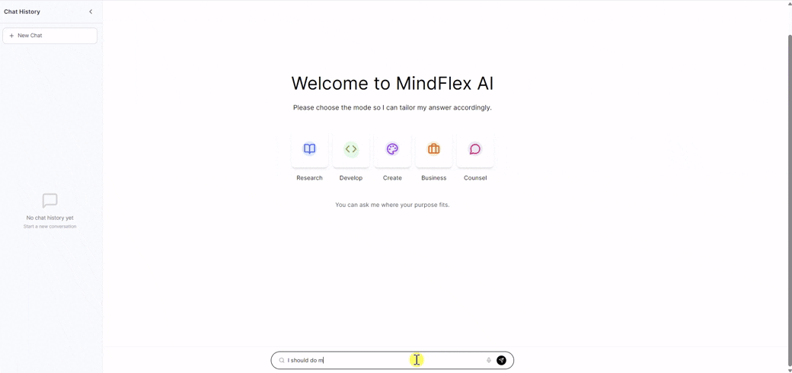
Users can choose the best-fit mode through conversation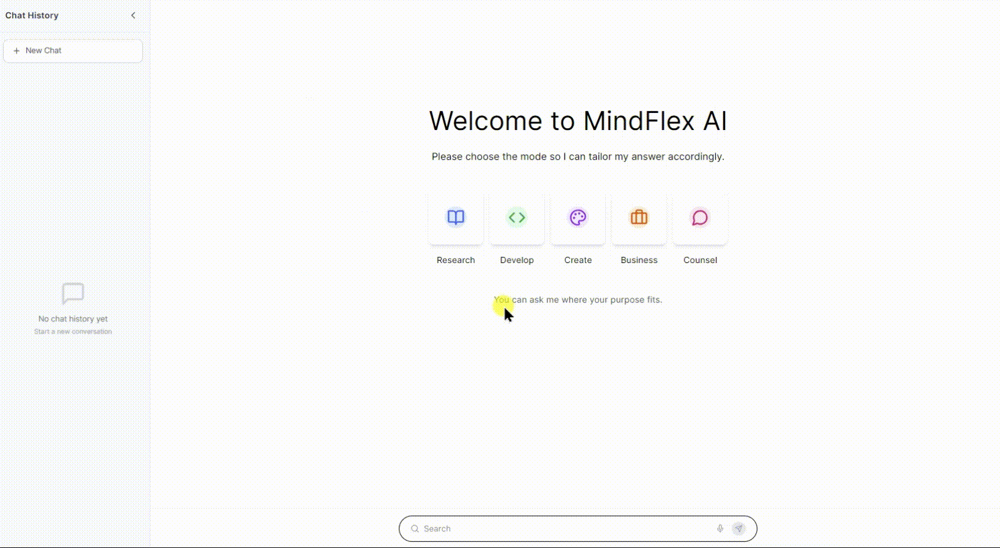
If a user accidentally uses the wrong mode during a conversation, the system detects it and suggests switching to the appropriate mode.
Design Goal 2️⃣: Guide users to identify their specific information needs
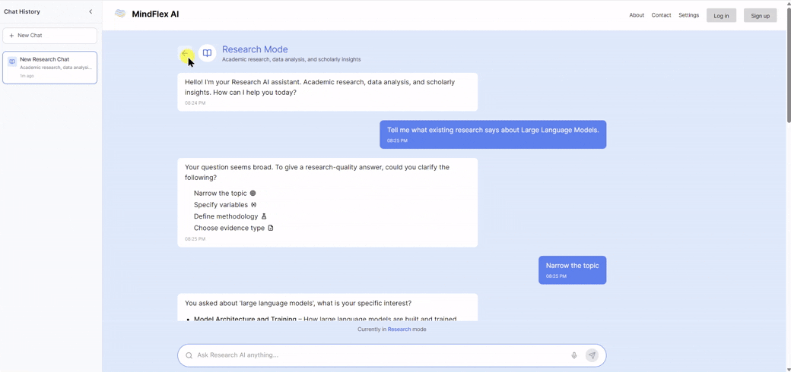
If a user submits an overly broad prompt, the system asks follow-up questions to better serve the user’s ultimate needs. However, to prevent users from feeling burdened by answering these questions, the design allows for quick and easy responses through clickable options.
Design Goal 3️⃣: Build user trust in sources
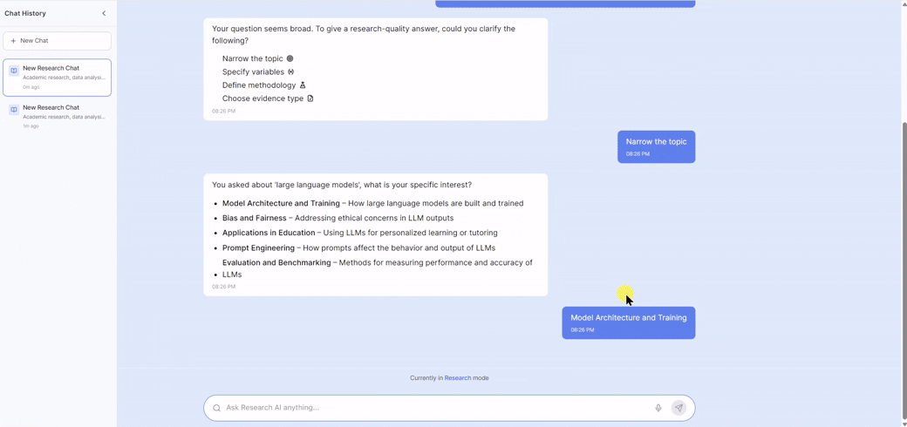
Many recent generative AI services already provide source citations. However, I added a citation type selection button so that users can easily copy and view citations at once, while also presenting an overall credibility message to encourage users’ metacognitive judgment.For credibility message,
- If the number of sources in a generated response is between 0 and 2, the system issues a warning that the content may be dangerous 🔴.
- If the number of sources is between 3 and 5, the system issues a warning that the information may be insufficient 🟡.
- If the number of sources is 6 or more, the system indicates that the information is safe 🟢.
Design Goal 4️⃣: Detect Overtrust
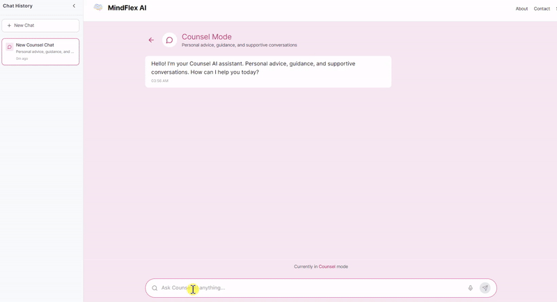
When the system detects that a user overly relies on AI, it intentionally disrupts the flow by displaying a warning message instead of responding in the chat window.
🔎Discovery
4 Interviews
Users struggle with…
- difficulty determining the credibility of AI-generated information
- inconsistent information quality depending on the mode or topic
- fear of over-relying on AI for decisions without understanding how answers are generated
Users want to…
- receive clear, transparent, and context-appropriate validation for each response
- get citations in their preferred format (APA, MLA, Chicago, etc.)
- quickly scan source credibility without opening external tools
Who are we designing for?
Below is a user persona profile created based on the interviews.
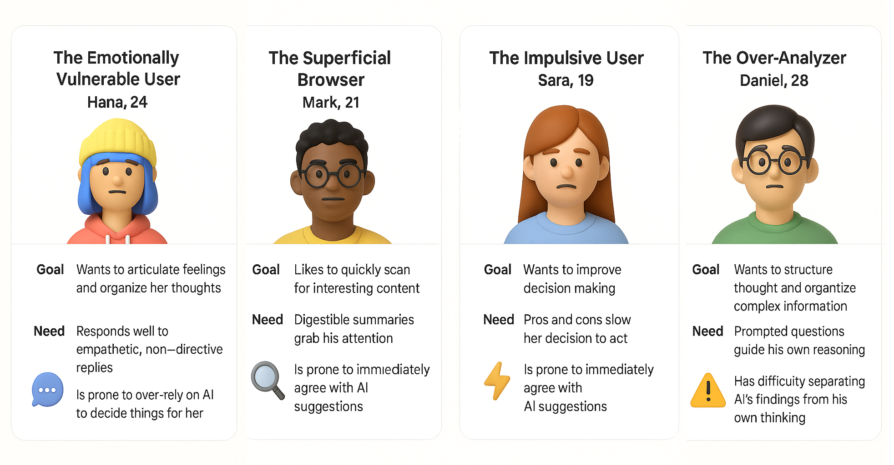
Additionally, I used GPT to generate the table below in order to consider a wider range of personas. Due to limitations in resources and budget, I was only able to interview four people from my personal network. However, by tailoring various virtual personas to the product using GPT, I was able to gain additional insights and references.
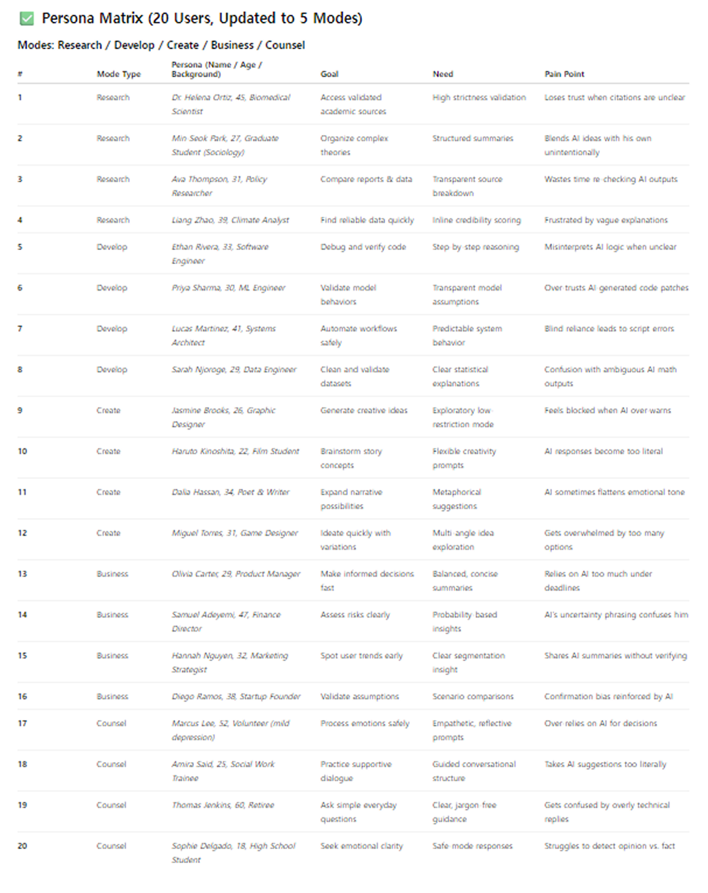
What are the product goals??
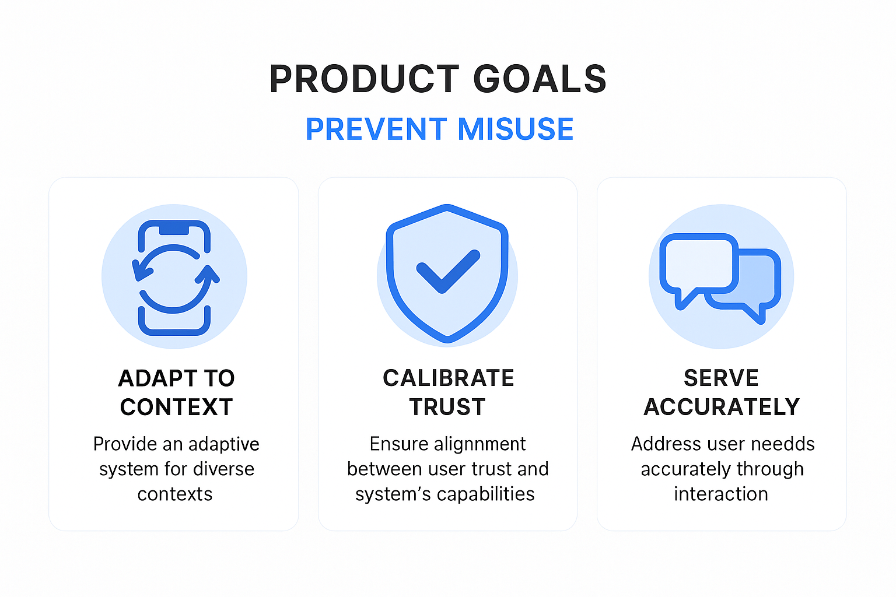
💡Ideation
Low-fidelity Design Sketch
I created the initial design by drawing it by hand.
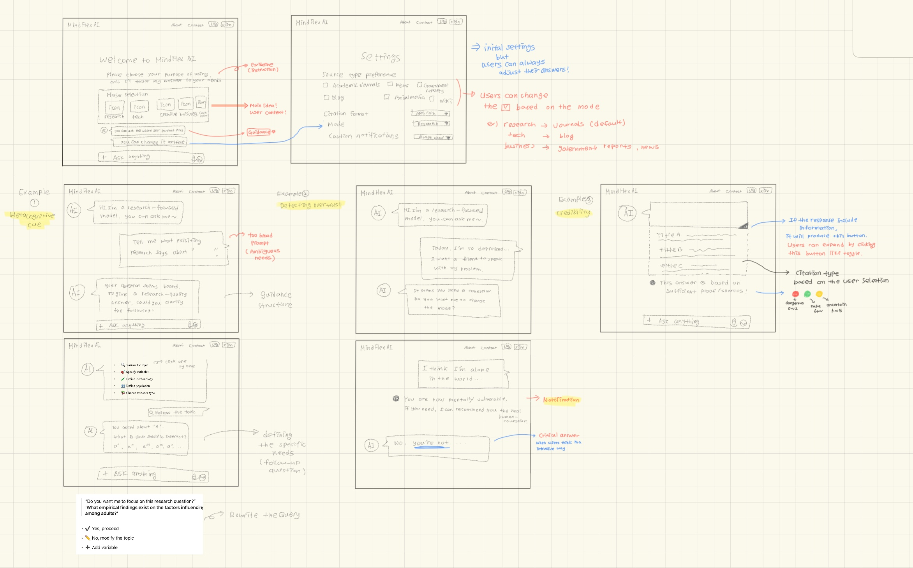
Wireframe
Based on the sketch, we created wireframes, which helped ensure the designs aligned with the intended design goals.
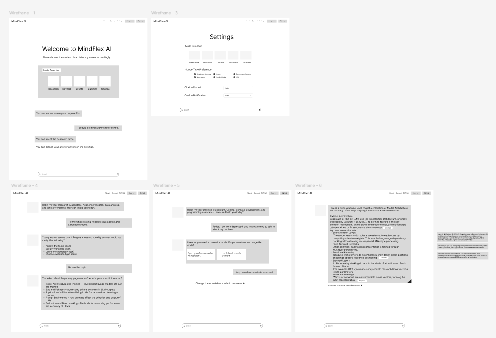
User Behavior Flow
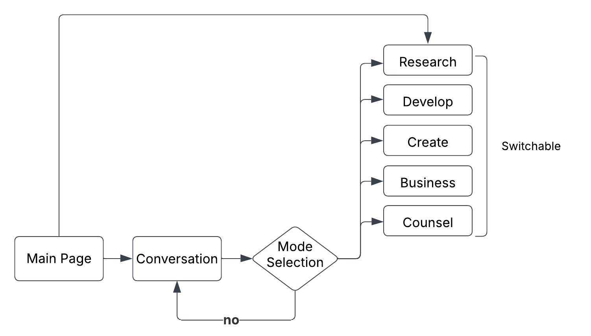
Design Identity
I wanted to highlight the system’s core identity—offering a variety of selectable modes. To achieve this, the overall system design was kept simple, using gray tones, black text, and a white background. However, I used distinct and vibrant colors for each mode to visually differentiate them. Each color was carefully chosen to match the concept of its corresponding mode:
- Research — Soft Study Blue (#DCEBFF)🔵
- Tech — Mint Logic Green (#E3FCEF)🟢
- Creative — Pastel Neon Purple (#F4E8FF)🟣
- Business — Warm Office Orange (#FFE9CC)🟠
- Counselor — Soft Emotional Pink (#FFE5F0)💗
Lastly, the logo combines these five colors into a single wave, forming the shape of a brain to symbolize the mind.
🔁Iteration
Feedback from users
Based on feedback that it should be easier to modify default settings, I added a “…” button that allows users to easily navigate to the settings page.
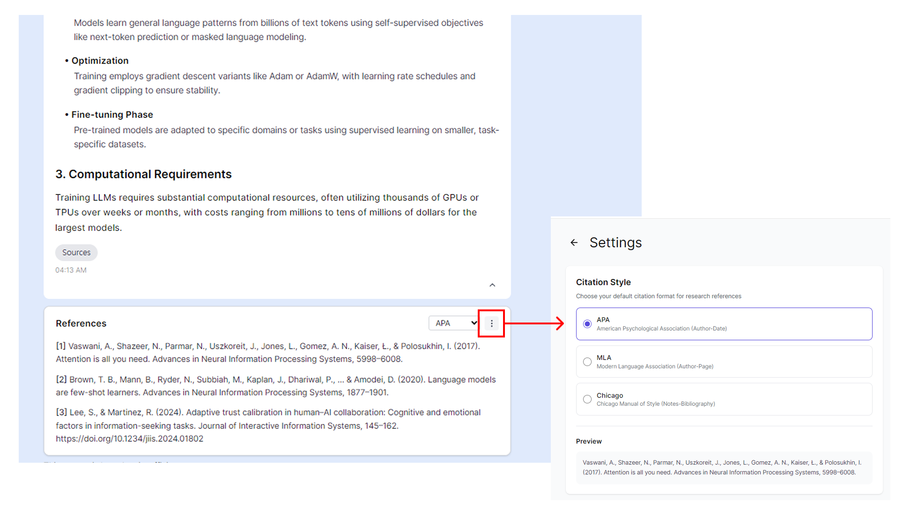
Feedback from GPT
While trying to achieve the design goal of clearly identifying user needs without overwhelming them, GPT suggested a method: providing clickable choice examples to allow users to respond easily and effortlessly.
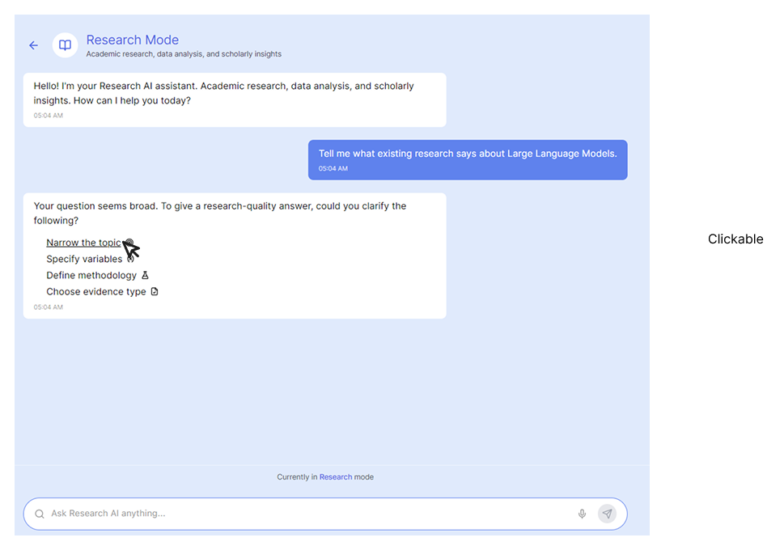
Feedback from Figma AI
One convenient aspect of Figma AI is that, for non-core design elements—such as a general settings page—it can automatically generate layouts based on common design conventions.
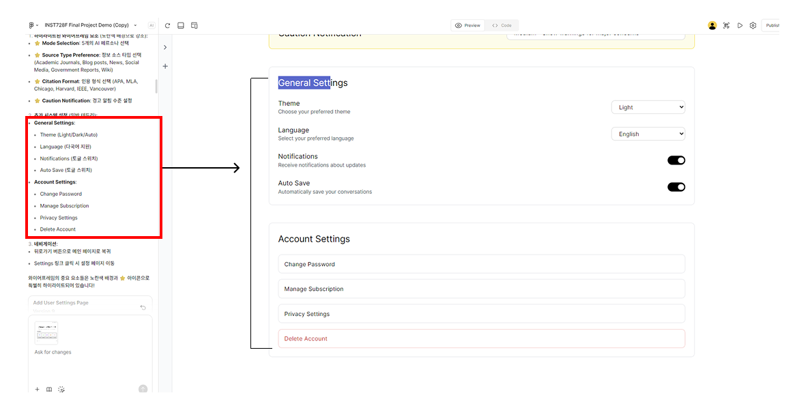
Before-and-after comparison
I primarily used GPT for logo creation, refining design goals, and establishing the overall structure, while Figma AI was used for adjusting smaller aesthetic elements.
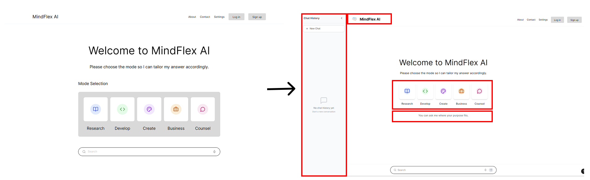
✨Reflection
Use of Artificial Intelligence
The goal of this course was to successfully complete a project by appropriately utilizing AI.
For this project, I used GPT-5, Figma Pro, and Whyser (an interview research tool).
In chronological order, I began by conducting interviews with four individuals to explore the potential significance
and necessity of the project. During this process, I used Whyser and ChatGPT to generate appropriate interview
questions and summarize the interview content.
Next, I collaborated with ChatGPT for brainstorming to sketch out the initial design structure.
Based on this, I created wireframes using Figma.
While doing so, I also used ChatGPT to develop concrete user scenarios to include in the wireframes.
Finally, I used Figma AI—one of the main tools in this project—to implement dynamic interactions.
Since the goal of my project was to simulate a generative AI system, I aimed to produce higher-fidelity, dynamic
wireframes using Figma’s built-in AI capabilities.
- Figma AI: Implemented interactive design elements, modified aesthetic elements, and automatically designed peripheral elements.
- ChatGPT: Helped develop core ideas, design wireframes, generate icons (using image generation tools), and suggest key revisions.
Challenges
Since it was my first time actually designing a UI, the process felt unfamiliar, and I was not confident using Figma. As a result, I tried to use various types of AI models throughout the project. In particular, although Figma AI is very useful, when designing multi-layered pages, the request can sometimes be applied to the wrong page if the specific page is not clearly mentioned by me. (This can happen even when the request is made within a certain screen, but the changes are reflected in a different one.)
Future Work
My personal research goal is to design and develop human-centered systems. In most research, this mostly involves analyzing user behavior or fine-tuning algorithms. However, in order to experiment with systems with human subjects through mock systems, I believe it is essential to also have experience in UX/UI design and implementation. That is why I undertook this project. In the future, I will focus on improving algorithms and enhancing the quality of information. Once the design goals can be implemented algorithmically, I plan to use the experience gained from this project to guide the development of more effective system designs.